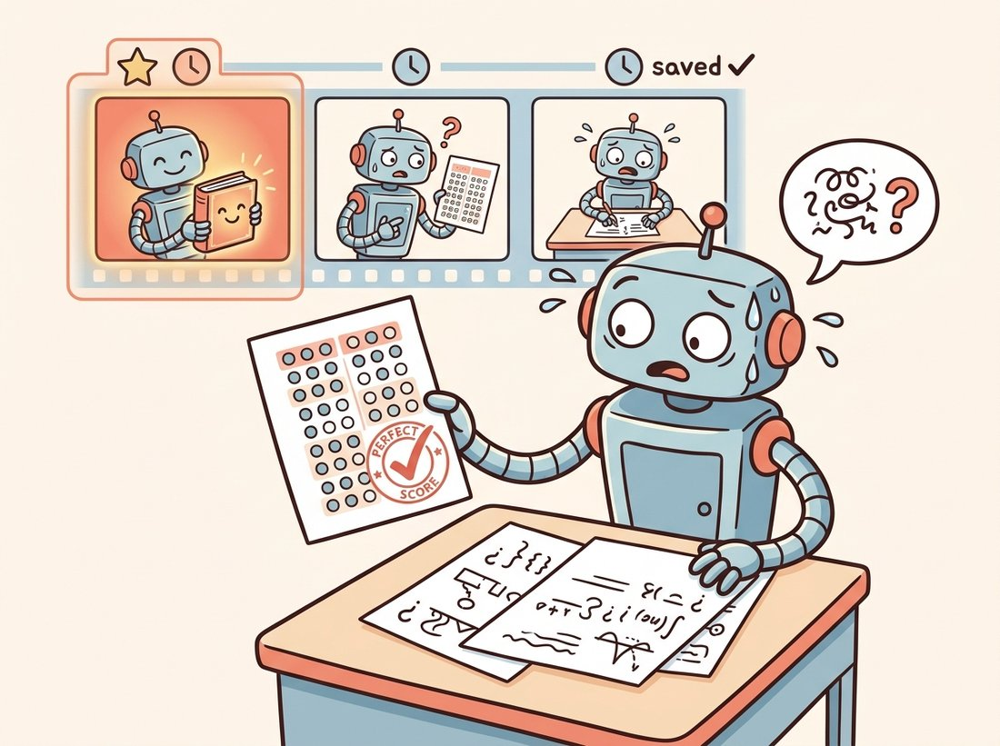

"Every epoch I do the same five things in the same order. People call it a loop. I call it a discipline, and it is the only reason any of you trust the number at the end."
A Training Loop That Never Skips a Step
The training loop is the one piece of code that recurs, lightly disguised, in every deep learning project in this book: for each batch, zero the gradients, run the forward pass, compute the loss, run backward, and step the optimizer, wrapped in train and validation phases that track metrics and checkpoint the best model. This section assembles that loop from the parts built in Sections 18.1 through 18.4, and once you can write it from memory, every later chapter becomes a story about what to plug into it.
We now have all the parts. Section 18.1 gave us a model, Section 18.2 the optimizer and loss, Section 18.3 the PyTorch abstractions, and Section 18.4 the data stream. The training loop is the conductor that brings them together. It is short, perhaps forty lines, and it is the single most important code in this entire book to understand cold, because the convolutional networks of Chapter 19, the transformers of Chapter 22, and even the diffusion models of Chapter 33 are all trained by this same loop with a different model and loss swapped in.
1. The Five-Step Core Beginner
At the heart of training is a five-step ritual performed once per batch, in this exact order. It is the same five-beat loop Section 18.3 named, zero, forward, loss, backward, step, now written out in full. Zero the gradients (because they accumulate, as Section 18.3 warned). Run the forward pass to get predictions. Compute the scalar loss. Run loss.backward() to fill every parameter's gradient. Call optimizer.step() to update the parameters. Figure 18.5.1 lays out the full loop, with this five-beat core nested inside the epoch and phase structure.
no_grad, tracks metrics, and checkpoints when validation improves. The scheduler advances the learning rate, early stopping halts a stalled run, and the test set is evaluated exactly once at the very end.2. The Complete Loop in Code Intermediate
The code below is the whole loop, assembled from the chapter's parts and runnable end to end. It separates the train and validation phases, toggles model.train() and model.eval() as Section 18.3's practical example taught, wraps validation in torch.no_grad(), tracks both loss and accuracy, and saves the model whenever validation accuracy reaches a new best. Read it as the reference implementation: every training script in Part III is a variation on it.
# The complete canonical training loop: run_epoch executes both the train and
# validation phases via a single flag, and train_model wires the optimizer and
# schedule, checkpoints the best validation accuracy, and stops early on a stall.
import torch
import torch.nn as nn
def run_epoch(model, loader, criterion, optimizer, device, train):
model.train() if train else model.eval()
total_loss, correct, n = 0.0, 0, 0
with torch.set_grad_enabled(train): # build the graph only in the train phase; restored on exit
for x, y in loader:
x, y = x.to(device), y.to(device) # move batch to GPU
if train:
optimizer.zero_grad() # 1. reset accumulated gradients
logits = model(x) # 2. forward pass
loss = criterion(logits, y) # 3. scalar loss
if train:
loss.backward() # 4. fill .grad on every parameter
optimizer.step() # 5. update parameters
total_loss += loss.item() * x.size(0)
correct += (logits.argmax(1) == y).sum().item()
n += x.size(0)
return total_loss / n, correct / n # average loss, accuracy
def train_model(model, train_loader, val_loader, epochs=20,
lr=3e-4, device="cuda", patience=5):
model.to(device)
criterion = nn.CrossEntropyLoss()
optimizer = torch.optim.AdamW(model.parameters(), lr=lr, weight_decay=0.01)
scheduler = torch.optim.lr_scheduler.CosineAnnealingLR(optimizer, T_max=epochs)
best_acc, stale = 0.0, 0
for epoch in range(epochs):
tr_loss, tr_acc = run_epoch(model, train_loader, criterion, optimizer, device, train=True)
va_loss, va_acc = run_epoch(model, val_loader, criterion, optimizer, device, train=False)
scheduler.step() # advance the LR schedule
if va_acc > best_acc: # checkpoint the best model only
best_acc, stale = va_acc, 0
torch.save({"model": model.state_dict(), "epoch": epoch,
"val_acc": va_acc}, "best.pt")
else:
stale += 1
if stale >= patience: # early stopping
print(f"early stop at epoch {epoch}; best val acc {best_acc:.4f}")
break
print(f"epoch {epoch:02d} train {tr_acc:.4f} val {va_acc:.4f}")
return best_accrun_epoch guards graph building with torch.set_grad_enabled(train) and runs the five-step core only when train is true, while train_model wires the AdamW optimizer and CosineAnnealingLR schedule from Section 18.2, saves a state_dict on every va_acc > best_acc, and breaks after patience stale epochs.
A few details earn their place. loss.item() pulls a Python float off the GPU tensor and detaches it from the graph (calling it inside the loop without .item() would silently retain the entire graph and leak memory). Multiplying by x.size(0) before summing correctly weights the final partial batch when averaging. And the checkpoint saves the state_dict (the parameter tensors) rather than the whole model object, which is the portable, version-robust way PyTorch recommends; you reload it into a freshly constructed model with model.load_state_dict(torch.load("best.pt")["model"]).
The two numbers printed each epoch, training accuracy and validation accuracy, tell you almost everything about the health of a run. If both are low and flat, the model is underfitting: too small, too regularized, or the learning rate is wrong. If training accuracy climbs toward perfect while validation stalls or falls, the model is overfitting: it is memorizing the training set, and you need more data, more augmentation (Section 18.4), or more regularization. A healthy run shows both rising together with validation a little below training. You learn to read these two curves the way a pilot reads an instrument panel, and Chapter 21 turns that reading into a systematic recipe.
A network that scores 100 percent on training and 60 percent on validation has not learned to see; it has memorized the answer key and panics at the actual exam. This is overfitting, and the train-validation gap is the lie detector that catches it. The two curves are a tiny soap opera you check every epoch: rising together is romance, training racing ahead while validation sulks is betrayal. Trust the validation number, never the training one, because the only grade that counts is the one on data the model has never met. The illustration below dramatizes both the memorized answer key and the matching checkpoint trap.

3. Choosing the Loss and the Metric Beginner
The loss is what the optimizer minimizes; the metric is what you actually care about, and they are often different. For multi-class classification the loss is cross-entropy (Section 18.2); for multi-label problems it is binary cross-entropy per label; for regression it is mean squared or L1 error. The metric, by contrast, is chosen for human interpretability and business relevance: accuracy when classes are balanced, but per-class precision, recall, and F1 when they are not, exactly the lesson from the imbalanced-data practical example in Section 18.4. You minimize cross-entropy because it is smooth and differentiable, but you report F1 because that is what tells you whether the defect detector works. As the book proceeds, the metrics specialize, mean average precision for object detection in Chapter 23 and intersection-over-union for segmentation in Chapter 24, but the loss-versus-metric distinction is constant.
4. Checkpointing, Resuming, and Early Stopping Intermediate
Two failure modes motivate checkpointing. First, the best model is rarely the last one: a run that trains for 20 epochs may peak at epoch 12 and degrade afterward, so saving only the final weights throws away the best result, which is why the loop above saves on every validation improvement. Second, long runs crash, machines preempt, and spot instances vanish; a periodic full checkpoint (model, optimizer state, scheduler state, and epoch number) lets you resume exactly where you left off rather than restarting from scratch. The optimizer state matters because Adam's momentum buffers (Section 18.2) are part of the training state; resuming without them restarts the optimizer cold. Early stopping, halting when validation has not improved for a patience window, both saves compute and acts as a regularizer by preventing the overfitting phase, and the loop above implements it in four lines.
The loop above is worth writing once by hand to understand it, but in production you rarely re-derive it. PyTorch Lightning reduces the entire train_model function to a LightningModule with a training_step and validation_step, then a Trainer(max_epochs=20, precision="16-mixed") that handles the epoch loop, device placement, the AMP scaling of Section 18.6, checkpointing, early-stopping callbacks, multi-GPU distribution, and logging, perhaps 50 lines of careful boilerplate collapsed to a handful and a config. The catch is that when something breaks you must know what it automated, which is exactly why this section builds the loop transparently first. torchmetrics similarly replaces hand-rolled accuracy and F1 accumulation with correct, distributed-aware metric objects.
Who: A research engineer at a medical-imaging startup training a tissue classifier on a tight GPU budget.
Situation: A 60-epoch run finished over a weekend. The script saved the model at the end of training, and Monday's evaluation showed disappointing test accuracy, several points below what the validation prints had shown midway through.
Problem: The validation accuracy had peaked around epoch 30 and then slowly declined as the model overfit the training set for the remaining 30 epochs. Saving only the final weights captured the overfit model, not the best one. The good model had existed on Saturday and been overwritten.
Decision: The engineer rewrote the loop to checkpoint on every validation improvement (the if va_acc > best_acc pattern above) and added early stopping with a patience of 8 epochs, so future runs would both keep the best model and stop wasting compute once it stopped improving.
Result: Re-running recovered the epoch-30-quality model, which matched the validation prints, and the early-stopping cut the wasted weekend compute in half. The fix was a dozen lines and saved both accuracy and GPU hours on every subsequent run.
Lesson: "Save the model" must mean "save the best model", validated on held-out data, not "save whatever weights happen to be in memory when the loop exits." Checkpoint on improvement, and the best result is never more than one validation pass old.
The plain best-checkpoint-plus-early-stopping recipe is being refined. Stochastic Weight Averaging (Izmailov et al.) and its later variants average the weights from several late-training checkpoints into a single model that often generalizes better than any individual one, and Model Soups (Wortsman et al., 2022) average independently fine-tuned models for a free accuracy bump that remains a standard 2024 to 2026 trick on vision benchmarks. Exponential moving averages of the weights, long standard in generative training, are now common in supervised vision too. On the stopping side, learning-curve extrapolation and budget-aware schedulers decide when to halt a run that is unlikely to improve, freeing compute for more promising configurations. All of these sit on top of the same loop; they change which weights you keep, not how you compute the gradient.
For each of the following train and validation accuracy trajectories, diagnose the condition and prescribe the next action: (a) train 0.55, val 0.54, both flat for ten epochs; (b) train 0.99, val 0.71, with val falling after epoch 15; (c) train 0.88, val 0.86, both still rising at the last epoch; (d) train and val both oscillating wildly between epochs. For each, name underfitting, overfitting, undertraining, or instability, and state the single most likely fix, linking each to the relevant earlier section.
Extend train_model to support crash recovery. Save a full checkpoint (model, optimizer, scheduler state dicts, and epoch) every epoch to last.pt, and at startup, if last.pt exists, reload all four and resume from the saved epoch. Verify correctness by training for five epochs, killing the process, restarting, and confirming the loss continues smoothly rather than spiking, which would indicate the optimizer momentum buffers were not restored. Explain why restoring the optimizer state, not just the model weights, is necessary for a clean resume.
Construct an imbalanced binary dataset (95 percent class 0). Train the chapter's MLP and log both the cross-entropy loss and three metrics each epoch: accuracy, class-1 recall, and class-1 F1. Produce a run where the loss falls steadily and accuracy stays high while class-1 recall stays near zero. Explain why minimizing cross-entropy can drive the loss down without improving the metric you care about, and state what change to the data pipeline (link to Section 18.4) or the loss would break the pathology.